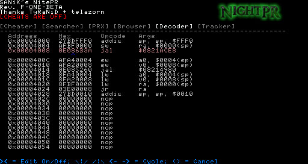

PSP NitePr Trucos
Con NitePR podemos colocarles trucos a nuestros juegos de PSP y crear nuevos si no los tiene
Para esta Guia
Requisitos para este tutorial
- PC o Notebook (Para pasar Archivos)
Programas para este Tutorial
Archivos Para descargar
| Archivos | Servidores |
|---|---|
| NitePr | Mega |
| Web Oficial | gamebrew.org |
Para Empezar este Tutorial
- Descargamos los archivos
- Descomprimimos los archivos .rar o .zip
- nite Pr RevK Stable Trucos.rar
- Con la última versión disponible
- Una vez descargado nuestro archivo
- Lo extraemos y copiamos
- La carpeta seplugins se copia
- Si el archivo game.txt nos pide sobrescribir le decimos que no
- Y abrimos el archivo de nuestra consola y cópianos el contenido del otro archivo en otra línea nueva
- Y reiniciamos nuestra consola
- Una vez iniciada la consola
- Habilitamos el plugins en nuestra consola
- Para esto mantenemos presionado el botón
 durante unos segundos
durante unos segundos - Nos saldrá el menú de Pro VSH MENU
- Dentro de este menú
- Vamos a recovert menú
- Después buscamos plugins
- Y dentro buscamos nitePR.prx [GAME]
- Si dice Disabled lo cambiamos por Enabled
- Y salimos del menú del todo
- Para agregar más Trucos
- Para esto debemos tener el ID del Juegos que queremos colocar los trucos
- Los trucos los podemos buscar en Google
- Una vez tengamos los trucos los pegamos en un txt
- Y lo guardamos en la siguiente ruta
ms0:/seplugins/nitePR/ ID del juego.txt - Donde el ID del Juego colocamos como ej
UCUS-98645.txt - Para usarlo
- Ahora entramos en el juego, presionamos
 , y luego presionamos los signos de y a la vez (los del volumen), después nos aparecerá un menú como este:
, y luego presionamos los signos de y a la vez (los del volumen), después nos aparecerá un menú como este: - Elegimos los trucos que queremos activar, luego salimos del menú presionando el , y una vez que salimos del menú de los trucos presionamos nota musical() para activar los trucos, o desactivarlos. Podremos abrir el menú de trucos en cualquier parte del juego.
- Y listo a disfrutar la aplicación


×